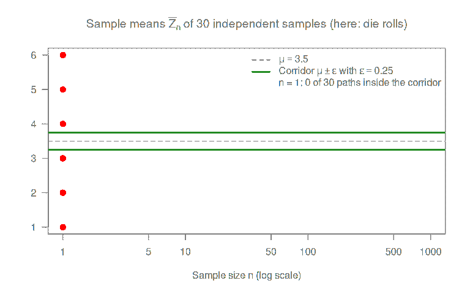
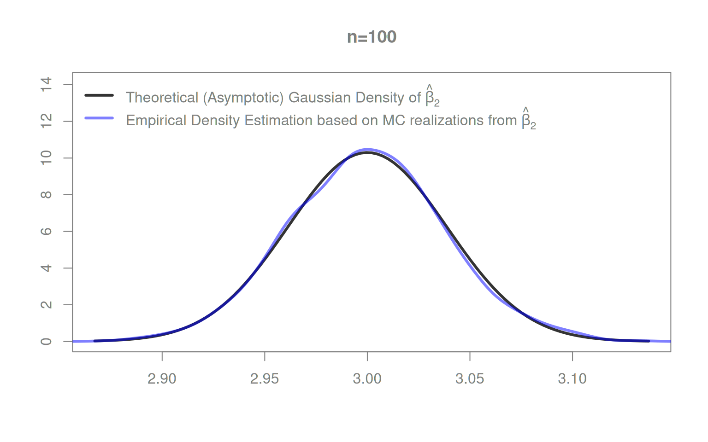
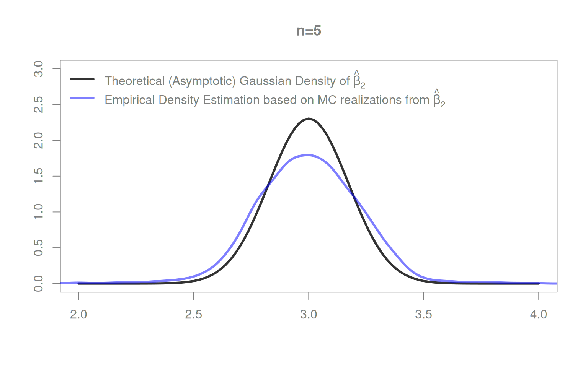

7 Large Sample Inference
The asymptotic results for the OLS estimator in this chapter follow Chapter 2 of Hayashi (2000).
Chapter 6 gave us exact finite-sample inference (\(t\)-tests, \(F\)-tests, confidence intervals) for \(\hat\beta,\) but only under Assumption 4\(^\ast\) of Chapter 6:
- errors \(\varepsilon_i\) are normally distributed, and
- errors are spherical (homoskedastic and uncorrelated).
Real data rarely satisfies either requirement exactly.
For a sufficiently large sample size \(n\), we can drop both requirements and still do (approximately) valid inference about \(\beta\). This chapter shows why, and how.
7.1 Why Large Samples Help
Two classical results from probability theory do essentially all of the work:
- The Law of Large Numbers (LLN): sample means stabilize around their population mean as \(n\) grows.
- The Central Limit Theorem (CLT): suitably scaled sample means become approximately normally distributed as \(n\) grows – regardless of how the underlying data are distributed.
Figure 7.1 illustrates what “converges in probability” means: pick any corridor \(\mu\pm\epsilon\) around the limit using some (small) \(\epsilon>0.\) For small \(n\), many paths of \(\bar{Z}_n\) lie outside it. As \(n\) grows, the probability that \(\bar{Z}_n\) lies outside the corridor shrinks to zero, i.e. \(P\left(|\bar{Z}_n-\mu|>\epsilon\right)\to 0\) as \(n\to\infty\), and this holds for every \(\epsilon>0,\) no matter how small.
Together, the LLN and CLT give us everything we need to show that \(\hat\beta_n\) is:
- consistent: \(\hat\beta_n\) gets arbitrarily close to \(\beta\) as \(n\to\infty\), and
- asymptotically normal: \(\sqrt{n}(\hat\beta_n-\beta)\) is approximately normal for large \(n\),
without requiring that the error terms \(\varepsilon_i\) themselves are normally distributed.
7.2 Asymptotics under the Classic Regression Model
Two OLS estimators: \[ \hat\beta_n=(X^{\top}X)^{-1}X^{\top}Y \qquad\text{and}\qquad s^2_{ub,n}=\frac{1}{n-K}\sum_{i=1}^n\hat\epsilon_i^2. \]
- Both are consistent.
- \(\hat\beta_n\) is asymptotically normal.
\(\Rightarrow\) We can drop the normality and spherical-errors assumption (Assumption 4\(^\ast\) of Chapter 6) – and still use our inference tools (\(t\)-tests, \(F\)-tests) from Chapter 6, as long as \(n\) is “large.”
Notation: split \(\hat\beta_n\) into its building blocks. \[ \begin{aligned} \hat\beta_n &=\left(X^{\top}X\right)^{-1}X^{\top}Y\\[2ex] &\text{expanding by $\frac{1}{n}\colon$}\\[2ex] &=\left(\frac{1}{n}X^{\top}X\right)^{-1}\frac{1}{n} X^{\top}Y\\[2ex] &\text{using $Y=X\beta+\varepsilon\colon$}\\[2ex] &=\left(\frac{1}{n}X^{\top}X\right)^{-1}\frac{1}{n} X^{\top}(X\beta + \varepsilon)\\[2ex] &\text{multiplying out:}\\[2ex] &=\underbrace{\left(\frac{1}{n}X^{\top}X\right)^{-1}\frac{1}{n} X^{\top}X}_{=I_K}\;\;\beta + \left(\frac{1}{n}X^{\top}X\right)^{-1}\frac{1}{n} X^{\top}\varepsilon\\[2ex] &=\beta + \underbrace{\left(\frac{1}{n}X^{\top}X\right)^{-1}}_{=S_{X^{\top}X}^{-1}}\;\;\;\;\frac{1}{n} X^{\top}\varepsilon\\[2ex] &=\beta + \;\;\;\;\;\;S_{X^{\top}X}^{-1}\;\;\;\;\;\;\;\;\;\;\;\frac{1}{n}\sum_{i=1}^n X_i\varepsilon \end{aligned} \] with \[\begin{align*} \underset{(K\times K)}{S_{X^{\top}X}} &:= \frac{1}{n}X^{\top}X = \frac{1}{n}\sum_{i=1}^nX_iX_i^{\top}\\[2ex] \frac{1}{n} X^{\top}\varepsilon &= \frac{1}{n}\sum_{i=1}^n X_i\varepsilon. \end{align*}\]
The mean of the \((K\times 1)\) vector \(X_{i} \varepsilon_i\) is given by \[\begin{align*} E\left(X_{i} \varepsilon_i\right) &=E\left(E\left(X_{i} \varepsilon_i\mid X\right)\right)\\[2ex] &=E\left(X_i \;E\left(\varepsilon_i\mid X\right)\right)\\[2ex] &=E\left(X_i\;\underbrace{E\left(\varepsilon_i\mid X\right)}_{=0}\right)\\[2ex] &=E\left(X_i\;0\;\right) = E(0) = \underset{(K\times 1)}{0}. \end{align*}\]
Thus, by the LLN, \(\frac{1}{n} X^{\top}\varepsilon = \frac{1}{n}\sum_{i=1}^n X_{i} \varepsilon_i\) converges (in probability) to a \((K\times 1)\) zero vector \(0,\) \[ \frac{1}{n} X^{\top}\varepsilon = \frac{1}{n}\sum_{i=1}^n X_{i} \varepsilon_i \to_p 0 \quad\text{as}\quad n\to\infty. \]
Let denote the mean of the \((K\times K)\) matrix \(X_iX_i^\top\) by \[ E\left(X_iX_i^\top\right) =: \Sigma_{X^{\top}X}. \]
Thus, by the LLN, \(S_{X^{\top}X}=\frac{1}{n}\sum_{i=1}^nX_iX_i^{\top}\) converges (in probability) to its population limit \(E\left(X_iX_i^{\top}\right)=\Sigma_{X^{\top}X},\) \[ S_{X^{\top}X}= \frac{1}{n}\sum_{i=1}^nX_iX_i^{\top} \to_p E\left(X_iX_i^{\top}\right)=\Sigma_{X^{\top}X} \quad\text{as}\quad n\to\infty. \]
Eventually, we need to invert the population limit quantity \(\Sigma_{X^{\top}X}.\) Therefore, we have to restate the full-rank assumption (Assumption 3 of Chapter 5) for \(\Sigma_{X^{\top}X}\colon\)
Assumption 3\(^\ast\): (Population) Rank Condition
The \((K\times K)\) matrix \[ \Sigma_{X^{\top}X}=E(S_{X^{\top}X}) \] has full rank \(K\). I.e., \(\Sigma_{X^{\top}X}\) is nonsingular and invertible.
Showing Consistency of \(\widehat{\beta}_n\)
Now, we have everything to argue that \(\widehat{\beta}_n\) is consistent for \(\beta;\) i.e. that \[ \widehat{\beta}_n\to_{p}\beta\quad\text{as}\quad n\to\infty \] as stated below in Theorem 7.3.
By the LLN, \(\frac{1}{n} X^{\top}\varepsilon = \frac{1}{n}\sum_{i=1}^n X_{i} \varepsilon_i\) is consistent for the \((K\times 1)\) zero vector \(0\colon\) \[ \frac{1}{n} X^{\top}\varepsilon = \frac{1}{n}\sum_{i=1}^n X_{i} \varepsilon_i\to_{p} \underset{(K\times 1)}{0} \quad\text{as}\quad n\to\infty. \]
By the LLN, \(S_{X^{\top}X}\) is consistent for \((K\times K)\) matrix \(\Sigma_{X^{\top}X}\): \[ S_{X^{\top}X}\to_{p}\underset{(K\times K)}{\Sigma_{X^{\top}X}}\quad\text{as}\quad n\to\infty. \] By another result, the Continuous Mapping Theorem, we may take the inverse and the product of these limits, so that, as \(n\to\infty,\) \[ \widehat{\beta}_n=\beta + S_{X^{\top}X}^{-1}\;\;\frac{1}{n}\sum_{i=1}^n X_i\varepsilon_i \to_p \beta + \Sigma_{X^{\top}X}^{-1}0=\beta. \]
The appropriately scaled OLS estimator is also asymptotically normal. We state this first for the homoskedastic case; the heteroskedastic case follows in Section 7.2.1.
By Theorem 7.4, for spherical errors and largish \(n\): \[ \begin{aligned} \sqrt{n}(\hat\beta_n-\beta)&\overset{a}{\sim}\mathcal{N}_K\left(0,\sigma^2 \Sigma^{-1}_{X^{\top}X}\right)\\[2ex] \Rightarrow\qquad\hat\beta_n &\overset{a}{\sim}\mathcal{N}_K\left(\beta, n^{-1}\sigma^2 \Sigma^{-1}_{X^{\top}X}\right). \end{aligned} \] The approximation error vanishes as \(n\to\infty.\)
We don’t know \(\operatorname{AVar}(\hat\beta_n) = \sigma^2\Sigma_{X^{\top}X}^{-1}\) – plug in the consistent estimator \[ \widehat{\operatorname{AVar}}(\hat\beta_n) = s_{ub}^2 S_{X^{\top}X}^{-1}. \] (Both \(S_{X^{\top}X}^{-1}\) and \(s_{ub}^2\) are consistent, by the LLN.)
7.2.1 The Case of Heteroskedasticity
An asymptotic (large \(n\)) normality result as in Theorem 7.4 can also be derived for conditionally heteroskedastic error terms. For largish \(n\colon\) \[ \begin{aligned} \sqrt{n}(\hat\beta_n-\beta)\overset{a}{\sim}\mathcal{N}_K\left(0,\Sigma_{X^{\top}X}^{-1}E(\varepsilon^2_iX_iX_i^{\top})\Sigma_{X^{\top}X}^{-1}\right)\\[2ex] \Rightarrow\qquad\hat\beta_n\overset{a}{\sim}\mathcal{N}_K\left(\beta,n^{-1}\Sigma_{X^{\top}X}^{-1}E(\varepsilon^2_iX_iX_i^{\top})\Sigma_{X^{\top}X}^{-1}\right). \end{aligned} \qquad(7.1)\] The approximation error vanishes as \(n\to\infty.\)
Key takeaway:
- Valid inference without assuming homoskedasticity.
- We only need a good estimator of the “sandwiched” middle term \(E(\varepsilon^2_iX_iX_i^{\top})\) in \[ \Sigma_{X^{\top}X}^{-1}E(\varepsilon^2_iX_iX_i^{\top})\Sigma_{X^{\top}X}^{-1}. \]
- That estimator is the subject of the rest of this chapter.
7.3 Robust Standard Errors
We need a consistent estimator of \[ E(\varepsilon^2_iX_iX_i^{\top}). \] The following Heteroskedasticity Consistent (HC) estimators are commonly used:
| HC-Type | Formula |
|---|---|
| HC0 | \(\widehat{E}(\varepsilon^2_iX_iX_i^{\top})=\frac{1}{n}\sum_{i=1}^n\hat\varepsilon_i^2X_iX_i^{\top}\) |
| HC1 | \(\widehat{E}(\varepsilon^2_iX_iX_i^{\top})=\frac{1}{n}\sum_{i=1}^n\frac{n}{n-K}\hat\varepsilon_i^2X_iX_i^{\top}\) |
| HC2 | \(\widehat{E}(\varepsilon^2_iX_iX_i^{\top})=\frac{1}{n}\sum_{i=1}^n\frac{\hat{\varepsilon}_{i}^{2}}{1-h_{i}}X_iX_i^{\top}\) |
| HC3 | \(\widehat{E}(\varepsilon^2_iX_iX_i^{\top})=\frac{1}{n}\sum_{i=1}^n\frac{\hat{\varepsilon}_{i}^{2}}{\left(1-h_{i}\right)^{2}}X_iX_i^{\top}\) |
| HC4 | \(\widehat{E}(\varepsilon^2_iX_iX_i^{\top})=\frac{1}{n}\sum_{i=1}^n\frac{\hat{\varepsilon}_{i}^{2}}{\left(1-h_{i}\right)^{\delta_{i}}}X_iX_i^{\top}\) with \(\delta_i=\min\{4,,h_i/\bar h\}\) |
HC3 is the most commonly used HC-estimator.
Tip
The leverage statistic of \(X_i\): \(h_i:=[P_X]_{ii}\).
\(1/n\leq h_i\leq 1\)
average leverage: \(\bar{h}=n^{-1}\sum_{i=1}^nh_i=K/n\)
High leverage: \(h_i\gg K/n\) – \(X_i\) sits far from the other \(X_j\)’s.
Influential outlier: high leverage and large \(|\hat\varepsilon_i|\) – distorts \(\hat\beta_n\).
HC2–HC4 upweight residuals at high-leverage points to compensate.
- HC0: White (1980); justified asymptotically.
- HC1–HC3: MacKinnon and White (1985); improved finite-sample performance.
- HC3: best overall finite-sample performance (Long and Ervin (2000)).
- HC4: Cribari-Neto (2004); further improvement under influential observations.
R:
sandwich::vcovHC(lm_obj, type = "HC3").
Note
Besides Heteroskedasticity Consistent (HC) estimators, there are also
- Heteroskedasticity and Autocorrelation Consistent (HAC) estimators, as well as estimators that consider
- clustered error covariances.
An R package that provides H(A)C estimators is sandwich.
For clustered covariances, the clubSandwich package can be used.
7.3.1 Robust Inference
7.3.1.1 Robust Hypothesis Testing: Multiple Parameters
System of \(q\) null hypotheses: \[ \begin{aligned} H_0: \underset{(q\times K)}{R}\underset{(K\times 1)}{\beta} = \underset{(q\times 1)}{r^{(0)}}\\ H_1: \underset{(q\times K)}{R}\underset{(K\times 1)}{\beta} \neq \underset{(q\times 1)}{r^{(0)}} \end{aligned} \]
- \(R\) (\(q\times K\)) and \(r^{(0)}\) (\(q\times 1\)) are chosen by the statistician.
- Require \(\operatorname{rank}(R)=q\) (no redundant equations).
Unlike the small-sample test (Section 6.2), this version is heteroskedasticity robust: \[ \begin{aligned} W&=n(R\hat\beta_n - r^{(0)})^{\top}[R\,S_{X^{\top}X}^{-1}\widehat{E}(\varepsilon^2_iX_iX_i^{\top})S^{-1}_{X^{\top}X}\,R^{\top}]^{-1}(R\hat\beta_n-r^{(0)})\\[2ex] W&\overset{H_0}{\to}_d\chi^2(q), \quad\text{as}\quad n\to\infty. \end{aligned} \qquad(7.2)\]
- Valid only asymptotically: use for “largish” \(n.\)
- In case of homoskedastic errors: substitute \[ S_{X^{\top}X}^{-1}\widehat{E}(\varepsilon^2_iX_iX_i^{\top})S^{-1}_{X^{\top}X} \] by \[ s_{ub}^2S_{X^{\top}X}^{-1} \]
Finite-sample correction
Instead of \(W\) statistic and the \(\chi^2(q)\) distribution use the \(\frac{W}{q}\) statistic and the \(F_{q,n-K}\) distribution for inference.
- Asymptotically (\(n\to\infty\)): \(F_{q,n-K}\) and \(\frac{1}{q}\chi^2(q)\) agree.
- For finite \(n\): using \(\frac{W}{q}\) and \(F_{q,n-K}\) gives more conservative test decisions compensating for the estimation error in \(S_{X^{\top}X}^{-1}\widehat{E}(\varepsilon^2_iX_iX_i^{\top})S^{-1}_{X^{\top}X}\) (or \(s_{ub}^2S_{X^{\top}X}^{-1}\)).
7.3.1.2 Robust Hypothesis Testing: Single Parameters
Hypotheses about a single parameter \(\beta_k,\) \(k=1,\dots,K\): \[ \begin{array}{ll} H_0: & \beta_k=\beta_k^{(0)}\\ H_1: & \beta_k\ne \beta_k^{(0)} \end{array} \]
Select the \(k\)th diagonal element of Equation 7.2 and take the square root: \[ T=\frac{\sqrt{n}\left(\hat{\beta}_k-\beta_k^{(0)}\right)}{\sqrt{\left[S_{X^{\top}X}^{-1}\widehat{E}(\varepsilon^2_iX_iX_i^{\top})S^{-1}_{X^{\top}X}\right]_{(k,k)}}} \qquad\qquad T\overset{H_0}{\to}_d\mathcal{N}(0,1),\quad\text{as}\quad n\to\infty. \]
- \(\left[S_{X^{\top}X}^{-1}\widehat{E}(\varepsilon^2_iX_iX_i^{\top})S^{-1}_{X^{\top}X}\right]_{(k,k)}\): the \((k,k)\) element of that \(K\times K\) matrix.
- This \(t\)-test statistic allows for heteroskedastic error terms.
- Homoskedastic errors: substitute by \(s_{ub}^2[S_{X^{\top}X}^{-1}]_{(k,k)}\).
Finite-sample correction
Use the \(t_{(n-K)}\) distribution (\(n-K\) degrees of freedom) instead of \(\mathcal{N}(0,1)\).
- Asymptotically (\(n\to\infty\)): \(t_{(n-K)}\) and \(\mathcal{N}(0,1)\) agree.
- For finite \(n\): \(t_{(n-K)}\) gives larger critical values – compensates for the estimation error in \([S_{X^{\top}X}^{-1}\widehat{E}(\varepsilon^2_iX_iX_i^{\top})S^{-1}_{X^{\top}X}]_{(k,k)}\) (or \(s_{ub}^2[S_{X^{\top}X}^{-1}]_{(k,k)}\)).
7.3.1.3 Robust Confidence Intervals
Following Section 6.4, but with robust standard errors, the heteroskedasticity robust \((1-\alpha)\cdot 100\%\) confidence interval is: \[ \operatorname{CI}^{\text{rob}}_{k,n,1-\alpha}= \left[\hat\beta_k\pm t_{1-\alpha/2,n-K}\sqrt{n^{-1}\left[S_{X^{\top}X}^{-1}\widehat{E}(\varepsilon^2_iX_iX_i^{\top})S^{-1}_{X^{\top}X}\right]_{(k,k)}}\right]. \] The coverage probability is asymptotic: \[ P(\beta_k\in\operatorname{CI}^{\text{rob}}_{k,n,1-\alpha})\to 1-\alpha\quad\text{as}\quad n\to\infty. \]
7.4 Monte Carlo Simulations
Data generating process: \[ \begin{aligned} Y_i &=\beta_1+\beta_2X_{i2}+\beta_3X_{i3}+\varepsilon_i,\qquad i=1,\dots,n\\ \beta &=(\beta_1,\beta_2,\beta_3)^{\top}=(2,3,4)^{\top}\\ X_{i2}&\sim U[-4,4]\\ X_{i3}&\sim U[-5,5]\\ \varepsilon_i|X_i&\sim U[-0.5 |X_{i2}|, 0.5 |X_{i2}|], \end{aligned} \] with \((Y_i,X_i)\) i.i.d. across \(i=1,\dots,n\), and \(X_{i2}\), \(X_{i3}\) independent of each other.
Unlike Section 6.6, the error term here is non-Gaussian and heteroskedastic: \[ Var(\varepsilon_i|X_i)=\frac{1}{12}X_{i2}^2. \]
Unconditional variance (law of total variance)
\[ \begin{aligned} Var(\varepsilon_i) &=E(Var(\varepsilon_i|X_i))+Var(E(\varepsilon_i|X_i))\\ &=E\left(\frac{1}{12}X_{i2}^2\right)+0\\ &=\frac{1}{12}\;Var\left(X_{i2}\right)\quad\text{(since $E(X_{i2})=0$)}\\ &=\frac{1}{12}\left(\frac{1}{12}(4-(-4))^2\right)=\frac{4}{9}. \end{aligned} \] (Using the variance formula for uniform random variables.)
R-function to generate data from this DGP:
## Function to generate artificial data
myDataGenerator <- function(n, beta){
##
X <- cbind(rep(1, n),
runif(n, -4, 4),
runif(n, -5, 5))
##
eps <- runif(n, min = - 0.5 * abs(X[,2]),
max = + 0.5 * abs(X[,2]))
Y <- X %*% beta + eps
##
data <- data.frame("Y" = Y,
"X_1" = X[,1],
"X_2" = X[,2],
"X_3" = X[,3])
##
return(data)
}7.4.1 Check: Distribution of \(\hat\beta_n\)
This DGP satisfies our chapter’s assumptions. By theory, \(\hat\beta_k\) should be approximately normal for large \(n\): \[ \sqrt{n}\left(\hat\beta_{n,k}-\beta_k\right)\to_d\mathcal{N}\left(0,\left[\Sigma_{X^{\top}X}^{-1}E(\varepsilon^2_iX_iX_i^{\top})\Sigma_{X^{\top}X}^{-1}\right]_{(k,k)}\right) \] \[ \Rightarrow\qquad\hat\beta_{n,k}\overset{a}{\sim}\mathcal{N}\left(\beta_k, \;n^{-1}\;\left[\Sigma_{X^{\top}X}^{-1}E(\varepsilon^2_iX_iX_i^{\top})\Sigma_{X^{\top}X}^{-1}\right]_{(k,k)}\right). \]
For this DGP, all population quantities are known:
From the distributions of \(X_{i2}\), \(X_{i3}\): \[ \Sigma_{X^{\top}X}=E(X_iX_i^{\top})=\left(\begin{matrix}1&0&0\\0&\frac{16}{3}&0\\0&0&\frac{25}{3}\end{matrix}\right). \] (Using \(E(X^2)=Var(X)\) for mean-zero \(X\), and \(Var(U[a,b])=\frac{1}{12}(b-a)^2\).)
And: \[ E(\varepsilon^2_iX_iX_i^{\top})=E\left(X_iX_i^{\top}\left(\frac{1}{12}X_{i2}^2\right)\right)=\left(\begin{matrix}\frac{4}{9}&0&0\\0&\frac{64}{15}&0\\0&0&\frac{100}{27}\end{matrix}\right). \] (Using \(E(X^k)=\frac{b^{k+1}-a^{k+1}}{(k+1)(b-a)}\) for \(X\sim U[a,b]\); see Wikipedia.)
For \(\hat{\beta}_2\), the theoretical large-sample distribution: \[ \begin{aligned} \hat\beta_{n,2}\overset{a}{\sim}&\mathcal{N}\left(\beta_2, \;\frac{1}{n}\;\left[\left(\begin{matrix}1&0&0\\0&\frac{16}{3}&0\\0&0&\frac{25}{3}\end{matrix}\right)^{-1}\left(\begin{matrix}\frac{4}{9}&0&0\\0&\frac{64}{15}&0\\0&0&\frac{100}{27}\end{matrix}\right)\left(\begin{matrix}1&0&0\\0&\frac{16}{3}&0\\0&0&\frac{25}{3}\end{matrix}\right)^{-1}\right]_{22}\right)\\[2ex] \hat\beta_{n,2}\overset{a}{\sim}&\mathcal{N}\left(\beta_2, \;\frac{1}{n}\;\left[ \left( \begin{matrix} 0.444 & 0 &0\\ 0 & 0.15 &0\\ 0&0&0.053 \end{matrix}\right)\right]_{22}\right)\\[2ex] \hat\beta_{n,2}\overset{a}{\sim}&\mathcal{N}\left(\beta_2, \;\frac{1}{n}\;0.15\right) \end{aligned} \] Monte Carlo check: does the asymptotic distribution of \(\hat\beta_2\) already work well at \(n=100\)?
First, we check the Monte Carlo approximated finite sample \((n=100)\) mean and variance of \(\widehat{\beta}_{n,2}\) using 5000 simulated realizations and compare them with the true (usually unknown) large sample population mean and variance
- \(E(\widehat{\beta}_{n,2})=\beta_2=3\)
- \(\operatorname{Var}(\widehat{\beta}_{n,2}\mid X)=\frac{1}{n}0.15\)
set.seed(123)
n <- 100 # a largish sample size
beta_true <- c(2,3,4) # true data vector
## Mean and variance of the true asymptotic
## normal distribution of beta_hat_2:
# true mean
beta_true_2 <- beta_true[2]
# true variance
var_true_beta_2 <- 0.15 / n
## Let's generate 5000 realizations from beta_hat_2, and check
## whether their distribution is close to the true normal
## distribution.
## (We don't condition on X since the theoretical limit
## distribution is unconditional on X)
rep <- 5000 # MC replications
beta_hat_2 <- rep(NA, times=rep)
##
for(r in 1:rep){
MC_data <- myDataGenerator(n = n,
beta = beta_true)
lm_obj <- lm(Y ~ X_2 + X_3, data = MC_data)
beta_hat_2[r] <- coef(lm_obj)[2]
}
## Compare:
## True beta_2 versus average of beta_hat_2 estimates
c(beta_true_2, round(mean(beta_hat_2), 4))[1] 3.0000 2.9998Good! The Monte Carlo approximated finite sample mean of \(\widehat{\beta}_{n,2}\) effectively equals the theoretical large sample mean \(E(\widehat{\beta}_{n,2})=3\).
## True variance of beta_hat_2 versus
## empirical variance of beta_hat_2 estimates
c(round(var_true_beta_2, 5), round(var(beta_hat_2), 5))[1] 0.00150 0.00147Great! The Monte Carlo approximated finite sample variance effectively equals the theoretical large sample variance \(\operatorname{Var}(\widehat\beta_{n,2}\mid X)=0.15/n=0.0015.\)
That is, for \(n=100,\) the first two moments (mean and variance) of the finite-sample distribution of \(\widehat\beta_{n,2}\) match those of the theoretical asymptotic (large sample) distribution of \(\widehat\beta_{n,2}.\)
But the first two moments are only two (albeit important) features of a distribution. Next, we check whether the total finite sample \((n=100)\) density of \(\widehat\beta_{n,2}\) matches the theoretical asymptotic (large sample) density of \(\widehat\beta_{n,2}.\)
## True normal distribution of beta_hat_2 versus
## empirical density of beta_hat_2 estimates
library("scales")
curve(expr = dnorm(x,
mean = beta_true_2,
sd = sqrt(var_true_beta_2)),
xlab = "",
ylab = "",
col = gray(.2), lwd=3, lty=1,
xlim = range(beta_hat_2),
ylim = c(0,14.1),main=paste0("n=",n))
lines(density(beta_hat_2,
bw = bw.SJ(beta_hat_2)),
col = alpha("blue",.5), lwd = 3)
legend("topleft", lty=c(1,1), lwd = c(3,3),
col=c(gray(.2), alpha("blue",.5)), bty="n",
legend=
c(expression(
"Theoretical (Asymptotic) Gaussian Density of"~hat(beta)[2]),
expression(
"Empirical Density Estimation based on MC realizations from"~hat(beta)[2])))
Great! For \(n=100,\) the Monte Carlo approximated finite sample density of \(\widehat\beta_{n,2}\) matches the theoretical asymptotic normal density of \(\widehat\beta_{n,2}\) really very well.
Does this also work for small \(n\), e.g. \(n=5\)?
set.seed(123)
n <- 5 # a small sample size
beta_true <- c(2,3,4) # true data vector
## Mean and variance of the true asymptotic
## normal distribution of beta_hat_2:
# true mean
beta_true_2 <- beta_true[2]
# true variance
var_true_beta_2 <- 0.15 / n
## Let's generate 5000 realizations from beta_hat_2, and check
## whether their distribution is close to the true normal
## distribution.
## (We don't condition on X since the theoretical limit
## distribution is unconditional on X)
rep <- 5000 # MC replications
beta_hat_2 <- rep(NA, times=rep)
##
for(r in 1:rep){
MC_data <- myDataGenerator(n = n,
beta = beta_true)
lm_obj <- lm(Y ~ X_2 + X_3, data = MC_data)
beta_hat_2[r] <- coef(lm_obj)[2]
}
## Compare:
## True beta_2 versus average of beta_hat_2 estimates
c(beta_true_2, round(mean(beta_hat_2), 4))[1] 3.0000 2.9963OK: The Monte Carlo approximated finite-sample \((n=5)\) mean sill effectively equals the theoretical large-sample mean of \(\widehat{\beta}_{n,2}.\)
## True variance of beta_hat_2 versus
## empirical variance of beta_hat_2 estimates
c(round(var_true_beta_2, 4), round(var(beta_hat_2), 4))[1] 0.0300 0.0562Ouch! The Monte Carlo approximated finite-sample \((n=5)\) variance is about 50% smaller than the theoretical large-sample variance of \(\widehat{\beta}_{n,2}.\)
\(\Rightarrow\) Large-sample results don’t simply carry over to small samples.
- Reason: the LLN hasn’t kicked in yet; the variability in \(S_{X^{\top}X}^{-1}\) is not negligible.
This issue, is also visible when comparing the Monte Carlo approximated finite-sample \((n=5)\) density of \(\widehat\beta_{n,2}\) against the theoretical large-sample density of \(\widehat\beta_{n,2}.\)
## True normal distribution of beta_hat_2 versus
## empirical density of beta_hat_2 estimates
library("scales")
curve(expr = dnorm(x,
mean = beta_true_2,
sd = sqrt(var_true_beta_2)),
xlab = "",
ylab = "",
col = gray(.2), lwd = 3, lty = 1,
xlim = c(2,4),
ylim = c(0,3), main=paste0("n=",n))
lines(density(beta_hat_2,
bw = bw.SJ(beta_hat_2)),
col = alpha("blue",.5), lwd = 3)
## Legend
legend("topleft", lty=c(1,1), lwd=c(3,3),
col=c(gray(.2), alpha("blue",.5)), bty="n",
legend=
c(expression(
"Theoretical (Asymptotic) Gaussian Density of"~hat(beta)[2]),
expression(
"Empirical Density Estimation based on MC realizations from"~
hat(beta)[2])))
Not good: For \(n=5,\) the Monte Carlo approximated finite-sample density of \(\widehat\beta_{n,2}\) has substantially fatter tails than the theoretical large sample distribution of \(\widehat\beta_{n,2}.\)
\(\Rightarrow\) using the quantiles of the large sample distribution would lead to over-rejections; i.e. \[ \text{Type I error rate} >\alpha \] leading to invalid statistical inference.
Fortunately: asymptotics kick in fast here. When you play with the code, you’ll see that the large sample distribution effectively matches the actual finite-sample distribution for sample sizes \(n\geq 15.\)
7.4.2 Check: Testing Multiple Parameters
Test the (here correct) null hypothesis: \[\begin{align*}
H_0:\;&\beta_2=3\quad\text{and}\quad\beta_3=4\\
\text{versus}\quad H_1:\;&\beta_2\neq 3\quad\text{and/or}\quad\beta_3\neq 4.
\end{align*}\] Equivalently: \[\begin{align*}
H_0:\;&R\beta -r^{(0)} = 0 \\
H_1:\;&R\beta -r^{(0)} \neq 0,
\end{align*}\] with \[
R=\left(
\begin{matrix}
0&1&0\\
0&0&1\\
\end{matrix}\right)\quad\text{ and }\quad
r^{(0)}=\left(\begin{matrix}3\\4\\\end{matrix}\right).
\] R code for this test, using HC3 robust variance sandwich::vcovHC(lm_obj, type="HC3"):
suppressMessages(library("car")) # for linearHypothesis()
# ?linearHypothesis
library("sandwich") # for vcovHC(), robust variance estimations
set.seed(1009)
## Generate data
MC_data <- myDataGenerator(n = 100,
beta = beta_true)
## Estimate the linear regression model parameters
lm_obj <- lm(Y ~ X_2 + X_3, data = MC_data)
vcovHC3_mat <- sandwich::vcovHC(lm_obj, type="HC3")
## Option 1:
# car::linearHypothesis(model = lm_obj,
# hypothesis.matrix = c("X_2=3", "X_3=4"),
# vcov = vcovHC3_mat)
## Option 2:
R <- rbind(c(0,1,0),
c(0,0,1))
car::linearHypothesis(model = lm_obj,
hypothesis.matrix = R,
rhs = c(3,4),
vcov = vcovHC3_mat)Linear hypothesis test
Hypothesis:
X_2 = 3
X_3 = 4
Model 1: restricted model
Model 2: Y ~ X_2 + X_3
Note: Coefficient covariance matrix supplied.
Res.Df Df F Pr(>F)
1 99
2 97 2 0.032 0.9685The \(p\)-value is larger than any typical significance level \(\alpha.\) So, we cannot reject \(H_0.\) That’s good news, since \(H_0\) is correct here (rejecting it would be a type I error).
On average, over many resamplings, some false rejections will occur, but the rate of those Type I errors must stay \(\leq\alpha.\) The following code chunck checks whether the Monte Carlo approximated finite sample \((n=100)\) probability of a Type I error remains bounded from above by the chosen nominal \(\alpha=0.05\) level.
set.seed(1110)
B <- 10000
p_values <- numeric(B)
for(r in 1:B){
MC_data <- myDataGenerator(n = 100, beta = beta_true)
lm_obj <- lm(Y ~ X_2 + X_3, data = MC_data)
vcovHC3_mat <- sandwich::vcovHC(lm_obj, type="HC3")
Ftest <- car::linearHypothesis(model = lm_obj,
hypothesis.matrix = c("X_2=3", "X_3=4"),
vcov = vcovHC3_mat)
p_values[r] <- Ftest$'Pr(>F)'[2]
}
## Nominal type I error rate
alpha <- 0.05
## Empirical type I error rate
length(p_values[p_values < alpha])/B[1] 0.0562Good! The Monte Carlo approximated finite sample \((n=100)\) probability of a Type I error effectively equals the chosen nominal \(\alpha=0.05\) level.
7.4.3 Check: Testing Single Parameters
Test a single parameter: \[\begin{align*} H_0:&\beta_3=4\\ \text{versus}\quad H_1:&\beta_3\neq 4. \end{align*}\]
# Load libraries
suppressMessages(library("lmtest")) # for coeftest()
## Generate data
n <- 100
MC_data <- myDataGenerator(n = n,
beta = beta_true)
## Estimate the linear regression model parameters
lm_obj <- lm(Y ~ X_2 + X_3, data = MC_data)
## Robust t test
## Robust standard error for \hat{\beta}_3:
SE_rob <- sqrt(vcovHC(lm_obj, type = "HC3")[3,3])
## hypothetical (H0) value of \beta_3:
beta_3_H0 <- 4
## estimate for beta_3:
beta_3_hat <- coef(lm_obj)[3]
## robust t-test statistic
t_test_stat <- (beta_3_hat - beta_3_H0)/SE_rob
## p-value
K <- length(coef(lm_obj))
##
p_value <- 2 * min( pt(q = t_test_stat, df = n - K),
1- pt(q = t_test_stat, df = n - K))
p_value[1] 0.5234886Again: The \(p\)-value is larger than any typical significance level \(\alpha.\) So, we cannot reject \(H_0.\) That’s good news, since \(H_0\) is correct here (rejecting it would be a type I error).
Let’s check the Monte Carlo approximated finite sample probability of a type I error:
set.seed(1009)
n <- 100
B <- 10000
p_values <- numeric(B)
for(r in 1:B){
MC_data <- myDataGenerator(n = n, beta = beta_true)
lm_obj <- lm(Y ~ X_2 + X_3, data = MC_data)
SE_rob <- sqrt(vcovHC(lm_obj, type = "HC3")[3,3])
beta_3_hat <- coef(lm_obj)[3]
## robust t-test statistic
t_test_stat <- (beta_3_hat - beta_3_H0)/SE_rob
p_values[r] <- 2 * min( pt(q = t_test_stat, df = n - length(beta_true)),
1- pt(q = t_test_stat, df = n - length(beta_true)))
}
## Nominal type I error rate
alpha <- 0.05
## Empirical type I error rate
length(p_values[p_values < alpha])/B[1] 0.0496Good! The empirical type I error rate effectively equals the nominal \(\alpha=0.05\) level.
7.5 Real Data Example
We revisit the data example from Section 6.7, but now allow for heteroskedastic, non-Gaussian errors.
## The AER package contains a lot of datasets
suppressPackageStartupMessages(library(AER))
## Attach the DoctorVisits data to make it usable
data("DoctorVisits")
lm_obj <- lm(visits ~ gender + age + income, data = DoctorVisits)Regression model: \[ Y_i = \beta_1 + \beta_{gender} X_{gender,i} + \beta_{age} X_{age,i} + \beta_{income} X_{income,i} + \varepsilon_i, \qquad i=1,\dots,n \]
- \(X_{gender,i}=1\) if subject \(i\) is a woman, \(0\) if a man
- \(X_{age,i}\): age of subject \(i\), in years \(/100\)
- \(X_{income,i}\): annual income of subject \(i\), in tens of thousands of dollars
Heteroskedasticity-robust inference:
-
sandwich::vcovHC()HC3 robust variance estimation -
lmtest::coeftest()Coefficient/inference table
## No robust standard errors:
coeftest(lm_obj)
t test of coefficients:
Estimate Std. Error t value Pr(>|t|)
(Intercept) 0.153710 0.036069 4.2616 2.066e-05 ***
genderfemale 0.062446 0.023455 2.6624 0.007782 **
age 0.402355 0.057131 7.0427 2.132e-12 ***
income -0.082306 0.031670 -2.5989 0.009380 **
---
Signif. codes: 0 '***' 0.001 '**' 0.01 '*' 0.05 '.' 0.1 ' ' 1
t test of coefficients:
Estimate Std. Error t value Pr(>|t|)
(Intercept) 0.153710 0.034351 4.4747 7.815e-06 ***
genderfemale 0.062446 0.024582 2.5403 0.01110 *
age 0.402355 0.060304 6.6721 2.785e-11 ***
income -0.082306 0.032321 -2.5465 0.01091 *
---
Signif. codes: 0 '***' 0.001 '**' 0.01 '*' 0.05 '.' 0.1 ' ' 1Alternative: stargazer, for (almost) publication-ready tables, with and without robust SEs:
suppressPackageStartupMessages(library("stargazer"))
# Adjust standard errors
cov_beta_HC3 <- vcovHC(lm_obj, type = "HC3")
robust_HC3_se <- sqrt(diag(cov_beta_HC3))
# Stargazer output (with and without RSE)
stargazer(lm_obj, lm_obj,
se = list(NULL, robust_HC3_se),
column.labels = c("", "Robust SE"),
type = "html") # alternatively: type = "text" or type = "latex"| Dependent variable: | ||
| visits | ||
| Robust SE | ||
| (1) | (2) | |
| genderfemale | 0.062*** | 0.062** |
| (0.023) | (0.025) | |
| age | 0.402*** | 0.402*** |
| (0.057) | (0.060) | |
| income | -0.082*** | -0.082** |
| (0.032) | (0.032) | |
| Constant | 0.154*** | 0.154*** |
| (0.036) | (0.034) | |
| Observations | 5,190 | 5,190 |
| R2 | 0.019 | 0.019 |
| Adjusted R2 | 0.018 | 0.018 |
| Residual Std. Error (df = 5186) | 0.791 | 0.791 |
| F Statistic (df = 3; 5186) | 33.218*** | 33.218*** |
| Note: | p<0.1; p<0.05; p<0.01 | |
References
Cribari-Neto, Francisco. 2004. “Asymptotic Inference Under Heteroskedasticity of Unknown Form.” Computational Statistics & Data Analysis 45 (2): 215–33.
Hayashi, Fumio. 2000. Econometrics. Princeton University Press.
Long, J Scott, and Laurie H Ervin. 2000. “Using Heteroscedasticity Consistent Standard Errors in the Linear Regression Model.” The American Statistician 54 (3): 217–24.
MacKinnon, James G, and Halbert White. 1985. “Some Heteroskedasticity-Consistent Covariance Matrix Estimators with Improved Finite Sample Properties.” Journal of Econometrics 29 (3): 305–25.
White, Halbert. 1980. “A Heteroskedasticity-Consistent Covariance Matrix Estimator and a Direct Test for Heteroskedasticity.” Econometrica, 817–38.